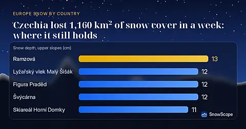

Czechia snow report: snow depth, new snow and the week ahead
In Czechia about 24,460 km² of high ground is white today, 86 % of the country's mapped mountains and hills. That is 490 km² more than yesterday. The deepest resort is Ski areál Karolinka with 27 cm on its upper slopes. Little or no new snow is expected in the week ahead.
See the live snow forecast for Ski areál Karolinka in the SnowScope appSnow depth, powder alerts and the 3D map, free.Today at a glance
| White area | 24,460 km² |
|---|---|
| Share of the high ground | 86 % |
| Most new snow in 24 h | 5 cm |
| Most new snow in 3 days | 12 cm |
| Next 3 days (snowiest slopes) | 0 cm |
| Next 7 days | 2 cm |
| Mostly white from | 500 m |
| Resorts with snow on top | 156 of 169 |
The last seven days
On 21 November about 620 km² was white; today it is 24,460 km².
The snow cover grew by 23,840 km² over these days.
The biggest three-day snowfall of the period reached 12 cm (to 27 November).
This season against a normal year
1 of the 1 deepest resorts are above their usual snow depth for 27 November.
Košťálka: 6 cm at about 697 m, a normal year has 3 cm.
These depths are for one height on each mountain, below the top.
In past winters the best snow at Košťálka usually came late February / early March.
Snowiest resorts today
Ski areál Karolinka leads with 27 cm on its upper slopes.
Then come U Bambuchů (27 cm), Košťálka (26 cm), Ski areál Sedlář (24 cm) and Kopřivná (24 cm).
| Resort | Upper slopes | New, 3 days | Next 3 days | Top |
|---|---|---|---|---|
| Ski areál Karolinka | 27 cm | 8 cm | 0 cm | 700 m |
| U Bambuchů | 27 cm | 8 cm | 0 cm | 699 m |
| Košťálka | 26 cm | 5 cm | 0 cm | 764 m |
| Ski areál Sedlář | 24 cm | 11 cm | 0 cm | 866 m |
| Kopřivná | 24 cm | 10 cm | 0 cm | 879 m |
Where the snow is coming next
The first flakes are expected around Thursday 3 December.
The last three days brought the most fresh snow to the Jeseníky, the Beskydy and Šumava.
The second week could add up to 15 cm where it snows most.
Snow by height
Height by height: 500-1,000 m: 5 cm on average, 85 % white; 1,000-1,500 m: 6 cm on average, 99 % white.
Most of the ground is white from about 500 m up.
Planning a trip
Above 500 m the ground is almost fully white (85 % covered), so runs up there have a continuous base.
The resorts with the highest lifts are the safest bet: Kopřivná (879 m), Ski areál Sedlář (866 m) and Košťálka (764 m).
Little new snow is expected in the next three days, so today's picture should hold for a weekend trip.
Day by day
- Friday 27 November · 24,460 km² white, up to 12 cm of new snow in three days, deepest Ski areál Karolinka (27 cm)
- Thursday 26 November · 23,990 km² white, up to 11 cm of new snow in three days, deepest Ski areál Karolinka (28 cm)
- Wednesday 25 November · 4,140 km² white, up to 5 cm of new snow in three days, deepest Košťálka (31 cm)
- Tuesday 24 November · 5,090 km² white, up to 6 cm of new snow in three days, deepest Košťálka (25 cm)
- Monday 23 November · 3,120 km² white, up to 5 cm of new snow in three days, deepest Dolní Morava sport & relax resor (28 cm)
- Sunday 22 November · 490 km² white, up to 3 cm of new snow in three days, deepest Figura Praděd (13 cm)
- Saturday 21 November · 620 km² white, up to 3 cm of new snow in three days, deepest Ramzová (13 cm) · Czechia lost 1,160 km² of snow cover in a week: where it still holds
Questions and answers
Is there snow in Czechia right now?
Yes. About 24,460 km² of high ground is white, 86 % of the mapped mountains. The deepest resort is Ski areál Karolinka with 27 cm on its upper slopes.
Where is the most snow in Czechia today?
Ski areál Karolinka leads with 27 cm on its upper slopes. Then come U Bambuchů (27 cm), Košťálka (26 cm) and Ski areál Sedlář (24 cm).
Will it snow in Czechia this week?
The first flakes are expected around Thursday 3 December. The last three days brought the most fresh snow to the Jeseníky, the Beskydy and Šumava.
From what height is there snow in Czechia?
Most of the ground is white from about 500 m up.
How much new snow fell in Czechia in the last three days?
Up to 12 cm on the snowiest slopes, 5 cm of it in the last 24 hours. At least 5 cm fell over some 18,380 km². The last three days brought the most fresh snow to the Jeseníky, the Beskydy and Šumava.
How many ski resorts in Czechia have snow?
156 of the 169 resorts we follow have snow on their upper slopes today. Snow on top does not mean the lifts are open: check the resort before you go.
When is the best time to ski in Czechia?
In past winters the best snow at Košťálka usually came late February / early March.
Is the season off to a good start in Czechia?
1 of the 1 deepest resorts are above their usual snow depth for 27 November.
Stories about Czechia

Czechia's white cover fell from 1,780 km² to 620 km² in seven days. Snow above 1,200 m offers the best chance for skiing on 21 November.

Only 22 of 170 Czech ski areas show snow cover on 17 November. The Jeseníky and Krkonoše lead with 9 cm and 8 cm in 72 hours. More snow arrives from 20 November.

Thaw has shrunk Czechia's snow cover from 1,250 km² to 720 km² in one day. Measured 16 November. Fresh snow arrives 17 November.